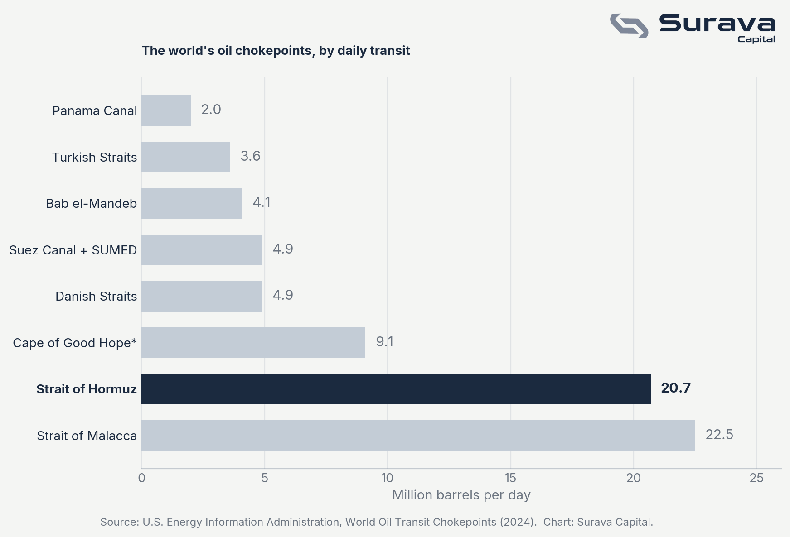

Market Insights #2 · March 23, 2026 · Surava Capital

When investors think about oil prices, they think about OPEC meetings, production quotas, and Saudi Arabia's next move. That's understandable, but it misses the bigger picture. A handful of narrow straits carry the world's oil, and the Strait of Hormuz sits near the very top. Unlike most of the others, it has almost no practical bypass: only Saudi Arabia and the UAE have pipelines that can route around it, and only partially. That combination of enormous volume and no real alternative is why the Strait of Hormuz is the world's most critical energy chokepoint, and in terms of market impact, it matters more than OPEC ever will. Right now, that argument is playing out in real time.
OPEC, the Organization of the Petroleum Exporting Countries, is a cartel of 13 major oil-producing nations including Saudi Arabia, Iraq, the UAE, and Iran. With allied producers like Russia under the broader OPEC+ framework, they control around 40% of the world's oil output. Their tool is simple: pump more or less oil to influence the global price. Cut production and prices tend to rise; open the taps and they fall.
But OPEC's influence operates on a slow dial. Production changes are negotiated, telegraphed, and often only partially implemented. Markets price them in weeks ahead. A chokepoint disruption is the opposite: sudden, unpredictable, and binary. And it doesn't even require conflict to cause chaos.
The Suez Canal has proven this repeatedly. Geopolitical crises shut it in 1956 and 1967, redrawing global shipping routes for months and years. Then in 2021 a single container ship ran aground and blocked it for six days with no geopolitics involved, stranding an estimated $9 billion in goods per day. The pattern holds across a century: when a chokepoint closes, the world economy feels it immediately.
At Hormuz the stakes are higher. During the 1980s Tanker War, both sides of the Iran-Iraq conflict targeted oil vessels in the Persian Gulf, forcing the U.S. to escort tankers just to keep oil moving. In 2019, tanker attacks sent prices sharply higher within hours, not because supply had been cut, but because markets priced in the risk that it could be. No OPEC meeting has ever moved markets that fast.
As of the time of writing, the Strait of Hormuz is effectively blocked. Following US-Israeli strikes on Iran in late February 2026, Iran's Revolutionary Guard declared the strait closed and began attacking vessels attempting to transit. Tanker traffic fell roughly 70%, with over 150 ships anchoring outside the strait to avoid the risk. Oil jumped nearly 10% within days. A US Defence Intelligence Agency assessment concluded Iran could keep the passage shut for anywhere from one to six months. OPEC+ pledged modest output increases, but the scale of the disruption far exceeds anything a production adjustment can offset. When the chokepoint closes, OPEC becomes largely irrelevant.
These events create both dangers and opportunities across asset classes. Energy equities react immediately: upstream producers and integrated majors typically benefit from price spikes, while refiners and airlines face margin pressure. Safe-haven assets like gold and the Swiss franc see increased demand as risk-off sentiment takes hold, though there is a counterforce: if higher oil drives broader inflation, central banks may tighten, and rising real rates raise the opportunity cost of holding non-yielding assets like gold. That tug-of-war between fear-driven demand and rate-driven headwinds is the dynamic worth watching. Shipping and defence names, from tanker operators to naval contractors, have also historically outperformed during prolonged tension.
This analysis reflects personal views and is intended for informational purposes only. It does not constitute financial advice.